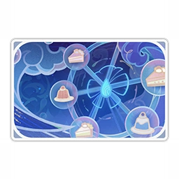

Фурина
"Повелительница всех вод, людей, родов и законов" горячо любима своим народом. Она с неугасающей страстью следит за каждым судебным разбирательством в оперном театре "Эпиклез" и всегда принимает во внимание реакцию зрителей.
Регион: Фонтейн
Глаз Бога: Гидро
Оружие: одноручный меч
Созвездие: Капельмейстер
Созвездие персонажа
Выпадение персонажа
Карточка персонажа
О персонаже:
Люди, никогда не переступавшие порог оперного театра «Эпиклез», и гости из других стран порой не в состоянии понять, почему здешняя богиня получила статус величайшей звезды. Будь то театральная постановка или судебное заседание, она всегда вовремя появляется на своём особом месте в зрительном зале, живо (а иногда и чересчур живо) реагирует на всё вокруг - и скоро внимание зрителей полностью переключается с происходящего на сцене на неё. Публика приходит в театр, чтобы получить как можно больше ярких впечатлений, и в этом смысле Фурина далеко превосходит абсолютно беспристрастного Нёвиллета. Не всегда почтение выражается в виде благоговейных взглядов снизу вверх, вот и отношение фонтейнцев к Фурине весьма своеобразно - пожалуй, для него больше подойдёт слово «пристрастие». Она неидеальна, не слишком могущественна, но люди знают, что на сцене она их не разочарует. В литературных кругах Фонтейна широко известна следующая метафора: Фурина - неувядающее воспоминание о весне молодости, что присутствует в каждом сердце. А кому не хочется навсегда продлить пору юности? И пусть вёсны пролетают без следа, вы только взгляните туда, где сверкают софиты - Фурина всё ещё там.
История 1(ур др 2):
Будучи символом оперного театра «Эпиклез», Фурина имеет право свободно вмешиваться в судебные процессы. Большинство её вопросов служат лишь проявлением любопытства и не имеют особой логической связи с делом, а иногда даже вызывают громогласный смех публики. Но каждый раз, когда зрителям начинает казаться, что Фурина здесь лишь для того, чтобы шуточками оживлять обстановку, и что сама она не в состоянии даже понять полную картину дела, Фурина вдруг извлекает на свет мысли огромной важности. Конечно, порой она остаётся равнодушна к процессу, потому что съела не самую подходящую сладость или пропустила парад украшенных цветами повозок, но утверждают, что публика всё равно остаётся довольной, потому что наблюдать за бурчащим божеством весьма забавно. Только в одном случае Фурина изменяет своей спонтанности - когда исполняет роль в опере. В Фонтейне с древности до наших дней было создано немало опер, и периодически их ставят в оперном театре «Эпиклез», причём главные роли исполняют самые востребованные артисты своего времени. Перед каждой постановкой труппа испытывает удачу, отправляя приглашение Фурине. Если у неё подходящее настроение, она соглашается участвовать в спектакле с простыми людьми. Такие дни становятся праздником для Фонтейна, все билеты распродаются, но даже стоячих мест не хватает, чтобы вместить всю разгорячённую публику. Когда же раздаётся музыка, божество выходит на сцену, и на глазах людей из взбалмошной очаровательной богини она превращается в персонажа пьесы. Величественная и решительная, коварная и алчная - в любой роли перевоплощение Фурины идеально. Благодаря этим выдающимся выступлениям Фурину и прозвали величайшей звездой. С трудом протиснувшийся на место очередного представления репортёр газеты «Паровая птица», кое-как справившись с остолбенением и вспомнив, что пришёл за интервью, спросил: «Будучи богиней, вы не участвуете в репетициях. Как же вам удаётся обеспечить столь высокий уровень исполнения?» На что Фурина ответила просто и горделиво: «Так я ведь богиня! Следующий вопрос!»
История 2(ур др 3):
Судебные дела и выступления занимают большую часть времени Фурины, кроме того, она часто появляется на различных дипломатических и политических мероприятиях. Её работа обычно ограничивается одной лишь публичной стороной, а закулисная подготовка и даже написание некоторых важных речей для этих мероприятий - дело рук других людей. Фурина весьма благодарна своим помощникам. Она слышала, что у Архонтов в других странах всегда полно дел, и жизнь их весьма нелегка. Одно время она даже пыталась взять этих других божеств за образец и в свободное время пробовала участвовать в реальной работе Дворца Мермония... Но в итоге люди и мелюзины раз за разом тактично отказывались от её помощи, утверждая, что «в настоящее время никаких дел, достойных внимания божества, нет». Фурина была рада это слышать, но после многочисленных отказов поняла - напрасно она надеялась, что работа во Дворце Мермония поможет ей разогнать скуку. Вообще-то у Фурины есть хобби, о котором мало кому известно: она любит проводить время с животными. Воды Фонтейна обширны и чисты, пейзажи живописны, и в этой стране водится множество очаровательных существ, которые помогают вечно находящейся в окружении людей Фурине переключиться и отдохнуть. Вот только у животных есть свои привычки, которые часто плохо согласуются с живым и спонтанным характером Фурины. В итоге то её обольёт шляповидная медуза, то за ней погонится остроскат... В каком-то смысле подводный мир куда проще и грубее, чем мир на суше, местные обитатели не станут оказывать ей одолжений всего лишь потому, что она богиня. Но со временем Фурина нашла подходящих для тесного общения зверьков - забирающихся погреться на солнышке пухленей. Чешет ли она им мордочки, гладит ли животики - они никогда не оказывают сопротивления, разве что повернут голову с молчаливым укором. «Что случилось? Говоришь, тебе это нравится! Хи-хи, и мне тоже!». Может, в их общении и есть недопонимания, но они стали добрыми друзьями.
История 3(ур др 4):
Фурина может создать впечатление поклонницы нестандартного мышления и бунтарки, но в некоторых ситуациях - особенно до и после спектаклей - она придерживается строжайших стандартов. Например, изготовление и покраска реквизита, момент включения и выключения софитов, время начала музыки и её ритм - во всё это она строго вносит бесконечные правки, пока не будет полностью довольна. Спектакль с участием Архонта - дело нелёгкое и хлопотное, из-за этого ходят слухи, что величайшая звезда Фонтейна высокомерна и ей сложно угодить. Однажды известная труппа получила возможность выступить вместе с Фуриной. Получив её требования, они пообещали, что всё сделают, но на деле организовали дело так, как им было привычнее. Руководитель труппы решил, что с учётом характера Фурины он сможет поставить её перед свершившимся фактом, а потом парой добрых слов убедить её снизить требования, и это избавит его от многих хлопот. В итоге, когда актёры ценой немалых усилий доставили реквизит в оперный театр «Эпиклез», они обнаружили, что под руководством Фурины на сцене уже устанавливает декорации другая труппа. «О, поскольку вы не стали меня слушать, я буду выступать с другими актёрами». Руководитель труппы был ошарашен: по его плану, Фурина должна была обнаружить некоторые «упущения» лишь после того, как сцена будет готова. Глядя на подготовленные другой труппой строго по указаниям Фурины части декораций, он осознал, что так они действительно выглядели на порядок лучше. Для обычного зрителя разница могла быть не заметна, но для профессионала было очевидно, что так все достоинства спектакля можно будет узреть во всех подробностях. И всё же руководитель не хотел отступать так просто. Он обвинил Фурину в том, что она нарушила дух сотрудничества, заранее найдя замену и ничего им об этом не сообщив. Фурина, разумеется, не осталась в долгу: показав лицом, что просто поверить не может в подобную наглость, она громко объявила: «Ты же не думаешь, что меня правда так легко одурачить? Эй, вышвырните их вон!»
История 4(ур др 5):
Долгий спектакль подобен череде перерождений, в которой финальный занавес недостижим. Пока сохраняется угроза пророчества, эта божественная история должна продолжаться. Хотя за всё это время фонтейнцы не раскрыли правды о Фурине, она понимала, что крушение доверия начинается с крохотных трещин, и однажды начавшись, этот процесс необратим. Цена подобного фиаско была для неё неприемлемой - все её долгие усилия оказались бы тщетны, а Фонтейн прекратил бы своё существование. Поэтому она не жалела сил: смеялась, когда следует радоваться, плакала, когда положено грустить, бравировала своей божественной природой, когда наступал момент похвастаться, и ни на минуту не расслаблялась. Фурина знала, что это спектакль и что ей нужно только продержаться до того момента, когда опасность минует, после чего она сможет отбросить маскарад и получить свободу выражать собственные эмоции. Но со временем она поняла, что исполняемая ей роль божества начала разъедать её собственную сущность. Фурина ощутила смятение: как ещё она может выразить радость, кроме демонстративно громкого смеха? Может, она от природы не слишком любила смеяться? Может, она впадала в отчаяние при столкновении с трудностями? Теперь всё это исчезло. Артисты часто говорят, что для того, чтобы хорошо сыграть персонажа, нужно на время стать им. С этой точки зрения, Фурина безукоризненно овладела ролью Гидро Архонта, и её старания принесли должный результат. Вот только никто не говорит о том, что произойдёт после спектакля, ведь обычно он длится лишь краткий миг. Выступление же Фурины было таким долгим, что обратный путь к себе для неё оказался глубоко погребён средь пыли и праха - и не разглядишь.
История 5(ур др 6):
Опасность, связанная с первородным грехом, была окончательно устранена, в Фонтейне возник новый порядок, в пострадавших районах кипела работа по восстановлению, а люди с надеждой смотрели в будущее. И только Фурина словно бы не являлась частью этого нового мира: она стремительно покинула Дворец Мермония и больше не появлялась в оперном театре «Эпиклез». Она хотела только одного - поскорее избавиться от причинявших ей боль воспоминаний, и её мало заботило, что говорят о ней люди, - истории Гидро Архонта пришло время закончиться. Вот только никто не мог дать ей ответ, куда направиться после того, как она исполнила свой долг. «Свобода» в этот момент была для неё бессмысленным словом. Вещи Фурины оставались сваленными в углу недавно снятой квартиры, и у неё не хватало духу, чтобы навести в комнате порядок. Она лежала на кровати, глядя в пустой потолок. Её знакомые быстро нашли себе место в новом мироустройстве, оказавшись незаменимыми из-за своей силы, ответственности или дружеских отношений. Означало ли это, что человек, получивший в этих условиях «свободу», попросту никому не нужен? Её размышления прервал визит гостьи - судебной дуэлянтки Клоринды. Клоринда с удивлением осмотрела новое место жительства Фурины и тут же предложила оплатить ей дом получше. Фурина долго её отговаривала, но несмотря на её сопротивление, вскоре дом и багаж были готовы. После этого Клоринда наконец рассказала, почему пришла: ей редко удаётся выбрать время для общения, но вот сегодня она как раз встречается со старыми друзьями, которые хорошо знают Фурину, поэтому Клоринда хочет пригласить и её - они ведь так давно не виделись. Раньше Фурина непременно отказалась бы, ведь человеку, скрывающему правду о себе, не следует с кем-то сближаться. Фурина нерешительно подняла голову. На лице Клоринды играла улыбка, словно бы она догадывалась о прошлых мыслях Фурины и о том, что она чувствует в данный момент. «Теперь-то у тебя нет причины отказываться?» - «Я... не очень в этом разбираюсь. Я ведь не испорчу вам веселье, правда?» В тот вечер Фурина наконец-то узнала, что значит как следует повеселиться с друзьями. Сначала она немного осторожничала, но после пары бокалов пришла в прежнюю форму и, если бы не вовремя оттянувшая её Клоринда, запрыгнула бы на стол. Для немногословной Клоринды подобное буйство Фурины стало неожиданностью. А Фурина... Пускай она всё ещё не знала, в каком направлении двигаться, но по крайней мере теперь она знала, что «свобода» не означает одиночество.
Салон одиноких сердец
Как-то Фурина прочитала в библиотеке Фонтейна никому не известную книгу о девушке, работающей служанкой в богатом поместье. Юная идеалистка Крабалетта, прочитав объявление в газете, прибывает в отдалённый особняк в горах устраиваться на работу и, несмотря на некоторую неуклюжесть, устраивается горничной. Хозяин особняка редко в нём появляется, и хотя в его отсутствие всем заправляют его говорливая жена и скрупулёзно придерживающийся этикета месье, девушка ведёт там беззаботную жизнь. Похоже, местные обитатели давно не бывали в городе, так что служанка учит их новым песням и играм, сближается с другими слугами и от души наслаждается их обществом. В особняке действует лишь одно нерушимое правило: никто не должен приближаться к тяжёлой деревянной двери, ведущей на третий этаж подвала. Запертая за ней тайна принадлежит только хозяину особняка. Хотя служанку одолевает любопытство, прекрасная жизнь в поместье ей дороже секретов. Незаметно проходит время, и вот однажды месье сообщает им о скором визите хозяина, после чего слуги начинают спешные приготовления. Праздничный пир удаётся на славу, смех и веселье наполняют каждый уголок замка. Вот только на следующий день хозяин опаздывает на пиршество, а отправившаяся за ним служанка обнаруживает его мёртвым. Жандармы полагают, что подозреваемых следует искать среди слуг, но не находящая себе места служанка уверена, что убийство связано с тайной особняка, и решается наконец открыть двери. Неожиданно для неё по ту сторону двери обнаруживается главный зал особняка, а на лестнице стоит хорошо знакомая ей хозяйка дома, которая произносит подозрительно знакомые слова: «А, ты должно быть Крабалетта, по объявлению о найме?» Фурину поразило, как эта история перекликается с её воспоминаниями. Она завидовала привольной жизни девушки и восхищалась смелостью, с которой та защищала свою жизнь и готовилась встретиться лицом к лицу со старой тайной. Позже Фурине приснился тот особняк, она была в нём Крабалеттой - запыхавшись, она подбежала к загадочной двери и, сделав глубокий вдох, толкнула створки. За дверью оказалось бушующее море, готовое поглотить особняк вместе с жандармами, госпожой, месье и ей самой, чтобы растворить без следа. Фурина проснулась, огляделась по сторонам, немного успокоилась и невольно вспомнила, что произошло в книге дальше. Открыв дверь, Крабалетта воспользовалась временной петлей, чтобы разгадать тайну смерти хозяина и открыть секрет особняка, освободив всех его обитателей от древнего проклятия. «Спасибо, Крабалетта», поблагодарила она смелую и упорную девчушку, которая обеспечила истории счастливый финал. А яркие персонажи этой истории со временем обрели очаровательную форму, став спутниками Фурины.
Глаз Бога(ур др 6):
«Если станешь человеком, то никому не сможешь открыть свою тайну. Тебя ждут страдания и одиночество... Ты действительно этого хочешь?» По воле случая, с самого начала столкнувшийся со сложностями мюзикл «Маленькая океанида» получил шанс быть представленным на сцене оперного театра «Эпиклез» и завоевал оглушительный успех. Его главная героиня Клио, которую сыграла Фурина, жертвует собой, чтобы вернуть пресную воду и тем самым спасти людей. По сценарию, когда она исчезает, с небес к ней спускается Глаз Бога, но она не протягивает руку, чтобы взять его, а позволяет ему безвольно упасть в глубины моря. Однако появившийся во время премьеры Глаз Бога был настоящим и предназначался Фурине. Глаза Бога обычно появляются в ответ на проявление страстных желаний, этот же был скорее наградой за её прошлые деяния. Когда Фурина взяла его в руки, в исходящем от него сиянии она отчётливо увидела, как благодаря этому спектаклю снова наполнилось её сердце. В прошлом актёрская игра принесла ей немало страданий, заставляя снова и снова возвращаться на сцену. Но как никто другой она понимала притягательность и яркость этой сцены и могла помочь тем, кого влекла к ней мечта. Наконец-то у неё появился ясный ответ на мучивший её так долго вопрос - куда идти и что делать дальше. Теперь она знала: она хочет увидеть мир глазами тех, кто не выходит на сцену, и создать величайшее представление. Она не собиралась ограничиваться операми, она хотела проникнуть за кулисы самых разных представлений. Стоит отметить также, что, хотя после окончания премьеры «Маленькой океаниды» Фурина с Глазом Бога в руках выглядела очень серьёзной и произнесла трогательную речь, стоило ей только выйти из театра, как она тут же отправилась навестить неосторожно разгневавшую её «местную легенду», чтобы отомстить... что закончилось для неё весьма плачевно. После бесславного возвращения она сразу же принялась изучать свой Глаз Бога, затопив при этом всё здание. После того как с помощью участников салона Фурина наконец справилась с последствиями потопа, она получила извещение от управляющего зданием: «Присутствие в доме животных запрещено, даже если эти животные носят титул месье или мадам».